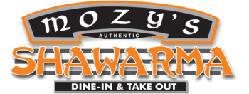
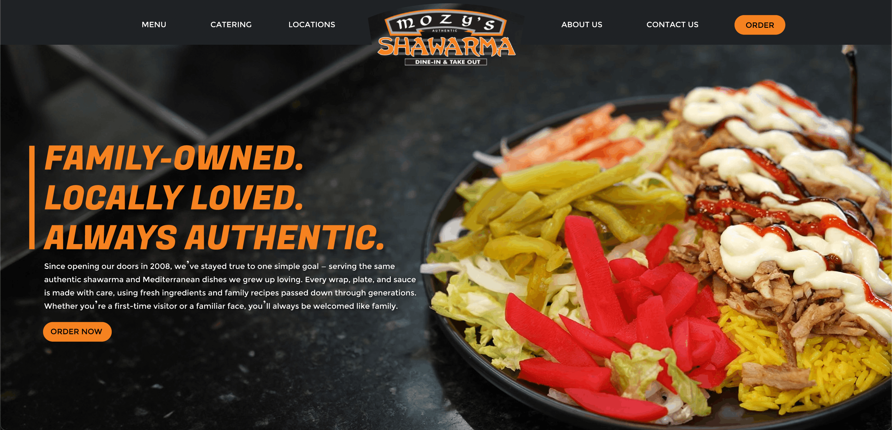
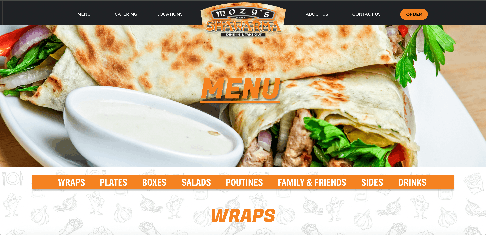
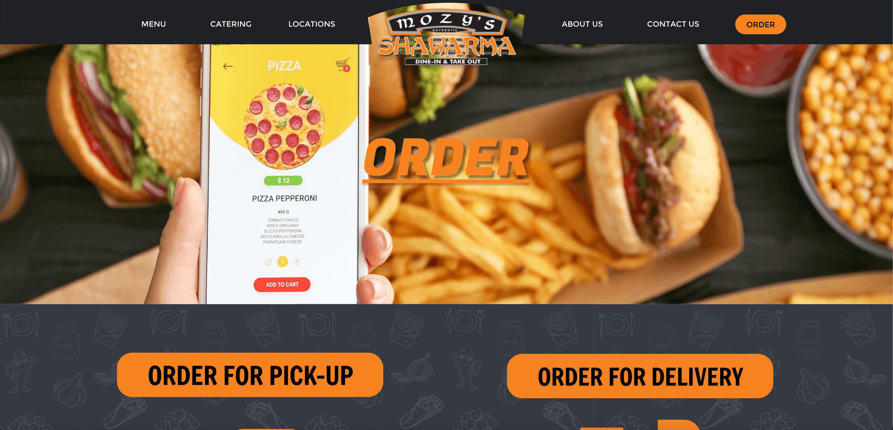

Brand Identity • Personal Project
Steel Ball Run
Created a fan-based logo exploring motion and stylized typography. Focused on strong silhouette and high contrast to reflect the energy of the source material.

I'm a 19-year-old design student from London, Ontario with interests in typography, poster design, web design, and brand identity creation.
2024 – NOW
Global Business and Digital Arts
University of Waterloo


Graphic design, photography, music, history, cinema, and digital culture.
Created a fan-based logo exploring motion and stylized typography. Focused on strong silhouette and high contrast to reflect the energy of the source material.

Designed a theatrical poster emphasizing character recognition and humour. Built to match stage production aesthetics and audience appeal.

Developed a music poster inspired by psychedelic visuals, using colour contrast and composition to reflect the band’s sound and era.

An illustrative logo concept built around expressive shape and a playful visual personality.

A caricature-based identity piece that leans into character design and a more personal tone.

A pin design concept created with a clean, graphic, and collectible look.
A café identity concept balancing friendliness, readability, and a warm brand presence.

A redesign concept intended to modernize a familiar competition symbol with a cleaner visual structure.

A promotional poster using playful visual language and bright presentation to create an inviting food campaign.

A minimalist film poster designed to communicate mood and recognizable cinematic iconography with restraint.

A lively poster piece built around expressive design choices and a more playful compositional structure.

A poster extension of the café brand, designed to carry the identity into a warm and inviting promotional format.

This project focused on improving visual hierarchy, navigation clarity, and overall professionalism for a local restaurant website. The redesign emphasizes strong food imagery, clearer calls to action, and a more polished digital brand presence.

The homepage was rebuilt around a strong hero image, clearer menu options, and more confident branding so users can immediately understand the restaurant and act on ordering.

The menu layout was reworked to make categories easier to scan and the browsing experience more intuitive.

This page simplifies the ordering process by separating key actions and making the next step immediately obvious.
.png)
My role in the project focused on shaping the general visual identity of the app, creating the logo, designing the review screen and profile screen, and helping establish the app’s overall interactivity. The final concept aimed to make student housing research feel more trustworthy, organized, and student-centered.
.png)
This screen establishes the primary browsing flow by surfacing reviewed properties, location details, and quick visual comparisons in a mobile-friendly layout.
.png)
A simple onboarding screen that introduces the visual identity and keeps account access straightforward.
.png)
A focused search screen built to help students quickly compare listings and narrow down housing options.
.png)
I designed the review screen to highlight peer feedback, category ratings, and a clearer sense of trust around each property.
.png)
This screen supports deeper browsing with images, quick property facts, and interaction options that help users evaluate a space efficiently.
.png)
I also helped shape the app’s interactivity, including communication features that make the housing process feel more direct and practical.
.png)
I designed the profile screen to organize student identity, saved content, and personal account information in a simple, clean layout.